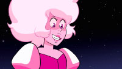

Relevamiento

Datos Generales
• Nombre: Diamante Rosa.
• Serie: Steven Universe.
• Debut: ep 12 "Selva Lunar".
• Temporada: 5.
• Nombre: Diamante Rosa.
• Serie: Steven Universe.
• Debut: ep 12 "Selva Lunar".
• Temporada: 5.
Diamante Rosa es una Gema muy alegre y divertida aunque también puede ser muy caprichosa y temperamental. Rosa al inicio demuestra una actitud inmadura, pero con el tiempo desarrolla una actitud más comprensiva y determinada. A pesar de sus buenas intenciones, tiene la tendencia de no pensar en profundidad en las consecuencias de sus acciones.
Ella tiene el cuerpo acorde al color de su gema, con una tez de color rosa. Cuenta con el pelo ondulado con forma de media melena de color rosa pastel. Además, sus ojos son rosa, con pupilas negras en forma de rombo. Su vestimenta se basa en un top de color rosa, el cual deja al descubierto el abdomen y su gema (un diamante).
Diamante Rosa fue una gema del Planeta Madre que formaba parte de la Gran Autoridad del Diamante que colonizaba otros planetas, a Rosa se le designo colonizar el Planeta Tierra. Sin embargo, al conocerlo mejor comenzó a apreciar la vida orgánica y para protegerla decidió comenzar una rebelión contra el Planeta Madre bajo su identidad secreta y alter ego Rose Quarzo.
Ella vencería a la "malvada Diamante Rosa" junto a un grupo de gemas llamadas las Gemas de Cristal. Durante la mayor parte de la series es considerada una villana ya que nadie sabia que era la lider de la rebelión y madre del protagonista.